Fun fact of the day
Loading today’s fact…
A biography
Roots, Records and a Life of Service
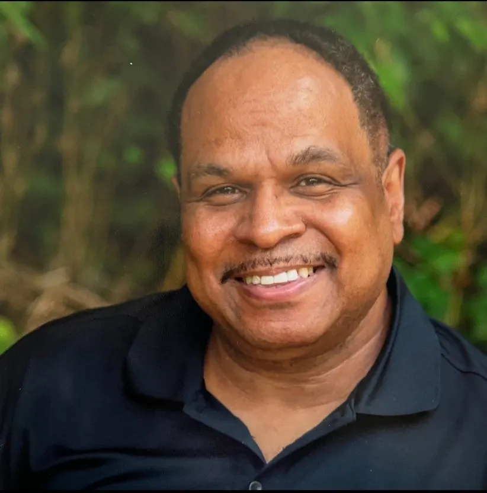
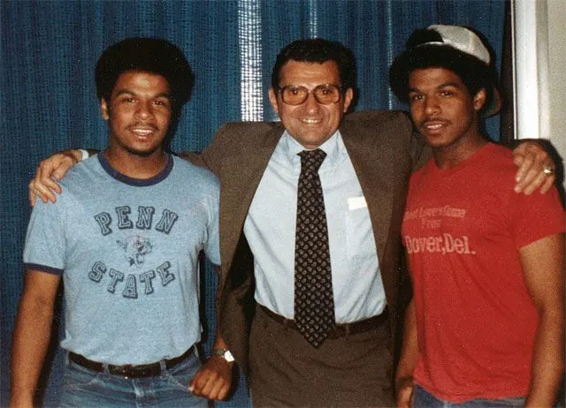
Left: Darryl Daisey, courtesy of Darryl Daisey, as published by The Penn Stater, Sept./Oct. 2024. Right: Darryl (right) with former Penn State coach Joe Paterno and twin brother Darnell (left), 1982. Courtesy of Darryl Daisey, via The Daily Collegian.
Lewes · Oakland · Paulsboro · Dover · Penn State · Garnet Valley
Prepared for Warren Daisey · November 2026
Fun fact of the day
Loading today’s fact…
A life in order
This page follows a biography prepared for Warren in November 2026. Every fact comes from a public source: newspapers, Penn State yearbooks, the Black History site Darryl helped build, city records, and the family’s own public posts. Small numbers link to the source list. Where a fact comes only from a LinkedIn post or profile, it stays marked self-reported. Nothing here is filled in by guesswork.
Lewes, the Nanticoke line, and a family on the move
Long before Darryl became a historian of other people’s stories, he was the product of one: a Black and Nanticoke family that has owned homes in Lewes, Delaware, since the nineteenth century. Over some thirty years, with relatives and friends, he built a genealogy back to Mills Coursey, about 1773. Lydia Coursey and James “Alfred” Daisey were never taught to read or write. They bought the family house anyway, in 1880. Darnell later told the Cape Gazette that many family members were born in it. “That house is most engrained in our family history.” 3
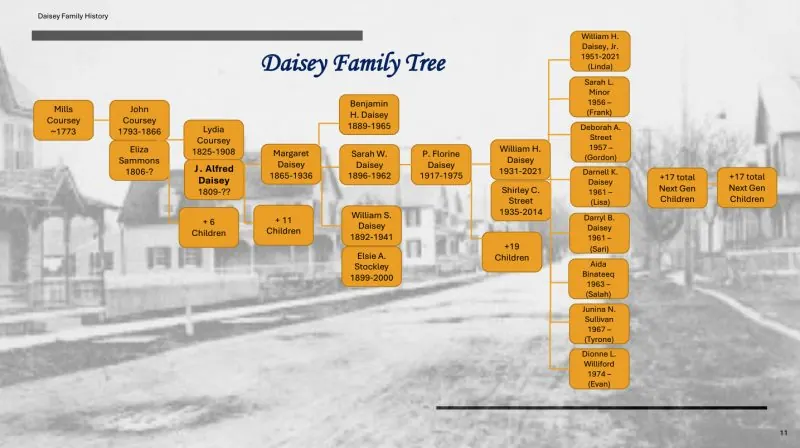
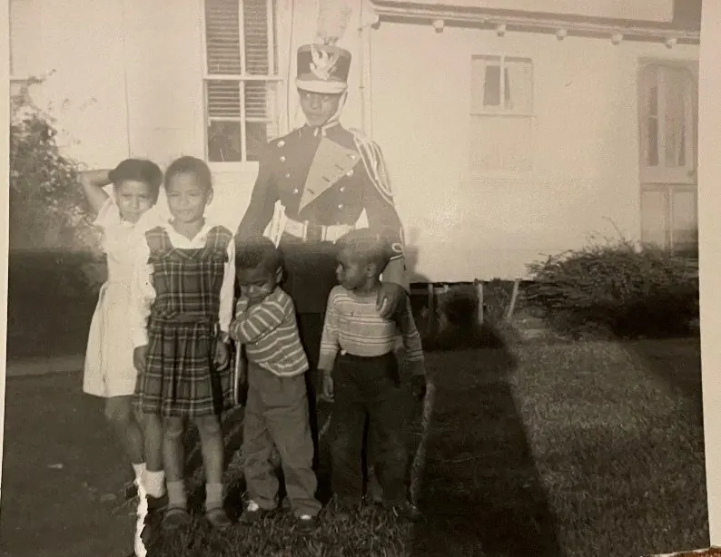
One of Sarah “Sallie” Waples Daisey’s brothers, William S. Daisey, served in World War I. The family believes he learned to drive in the Army. Mustard gas left complications that lasted his life. A 1920s photograph shows him beside the Hotel Rodney Lewes and Rehoboth Auto Bus Line, which he operated. He married Elsie Stockley. She outlived him by decades, lived to 101, and died in 2000 as Elsie Daisey Draine. She left a gold-colored can of photographs. It reached the twins and their siblings in April 2022. 3
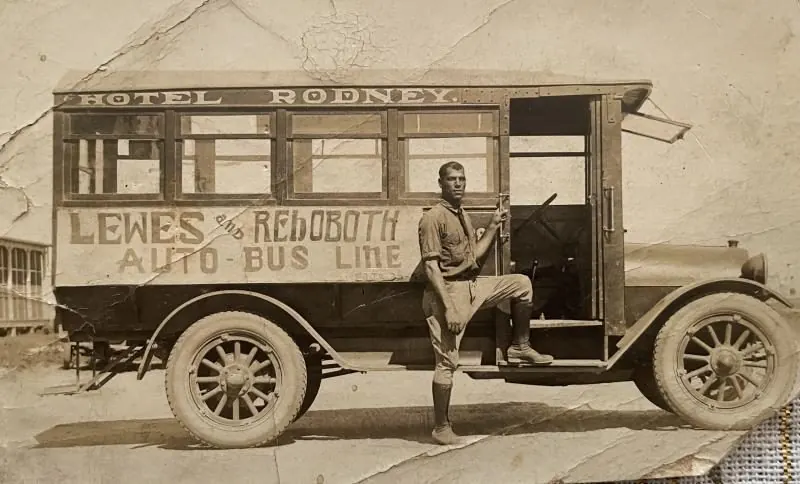
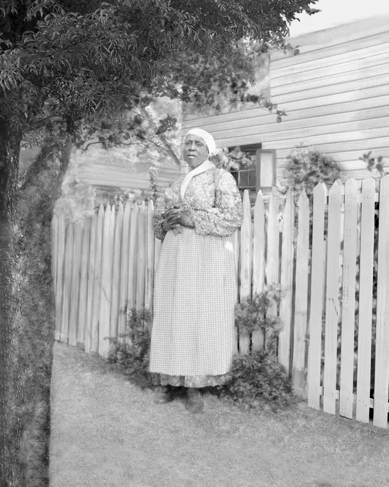
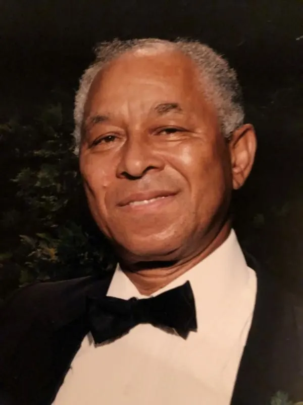
William Harrison “Bill” Daisey Sr. was born in Lewes on October 20, 1931, and grew up near Indian Mission Church. Segregation meant the only way to finish high school was to move about ninety miles away, live with his grandmother, and graduate from Howard High School in Wilmington. Delaware Today has noted that no Sussex County school awarded high school diplomas to Black or Native American students until 1950. 5
He learned more than eight trades and, while working full time, earned a bachelor’s in mathematics from Delaware State College and a master’s in administration from Glassboro State College, now Rowan. The Cape Gazette described him as one of twenty children. His obituary counted twelve surviving siblings and seventeen who had died before him, so the sources do not agree on an exact number. 3
In 1987 he was elected to the Dover City Council, the first Native American and the second person of color to hold that post. He served three terms. In 2013 he became chief of the Nanticoke Indian Tribe, Chief William “Thunder Eagle” Daisey, and served until he stepped down for medical reasons in January 2016. He called it “the biggest honor of my life.” 5
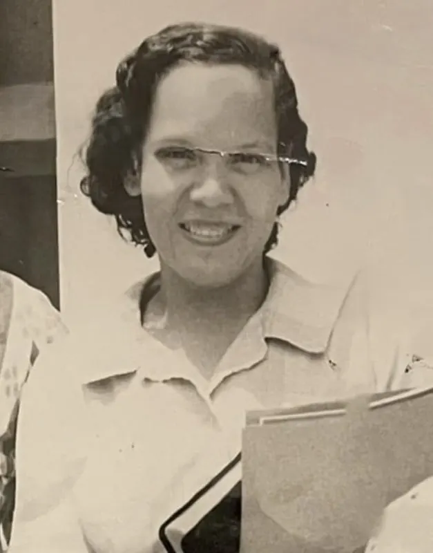
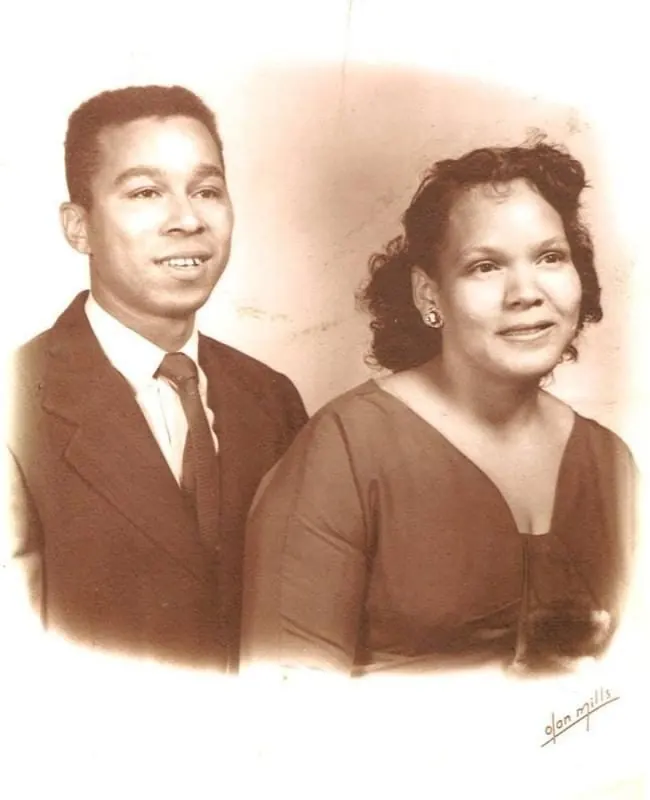
Shirley Daisey (1935–2014) was a Girl Scout leader for more than thirty years. In the early 1960s the Lewes troop still did not admit African American or Native American girls. In 1963 local mothers formed their own troop, and Shirley was one of its leaders. By the late 1960s the troops had desegregated. When her children built a new house in Lewes in 2025, they included “Shirley’s Pantry,” for the matriarch who loved to bake. 9
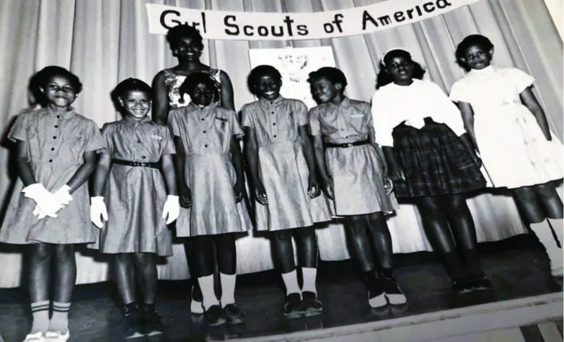
Darryl and Darnell were two of eight children: William Jr., Sarah, Deborah, Darnell, Darryl, Aida, Junina, and Dionne. In September 1961 the formerly all-white Lewes schools began admitting Black students. Six Allen children and the three oldest Daiseys — William Jr., Sarah, and Deborah — integrated the system. “Lewes was a small town; everyone knew everyone,” Darryl said in 2025. “My father was more concerned with outsiders.” 30
The family left Lewes in 1965 for Oakland, California. Darryl has not lived there since, though the tie never loosened. At a carnival, an ice cream vendor kept serving white customers ahead of the twins until Shirley marched them away: “we would get our ice cream somewhere else!” 11
“A lot of people say young adults my age are too young to remember. I remember. I just thank God I was too young to hate because of it.”
He wrote that in The Daily Collegian on April 10, 1985, about April 4, 1968. He was almost seven, in first grade at Toler Heights Elementary. A crowd gathered outside shouting “they shot him,” and bricks came through the windows. His mother walked the twins home past broken glass. When the news said Dr. King had died, the house went quiet. “The ironic part was that I started to get to know who Dr. King was on the day he died.” 11
The family moved to Paulsboro, New Jersey, in April 1969, and to Dover, Delaware, in 1978, when Bill became a vice principal in Harrington. Alumni directories list both twins with Dover High School’s Class of 1979. Darryl’s profile on that site was created by its member, so the biography treats the Dover High listing as self-reported. La Vie later listed their hometown as Dover. 13
University Park, 1979–1983
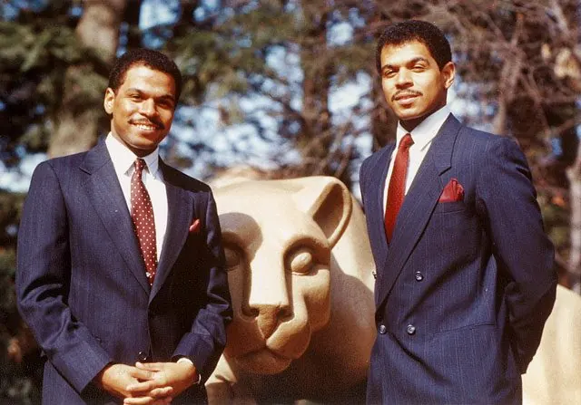
“I had applied to one school to go to college: Penn State,” he said in his recorded interview for the Chronicles. “I never saw Penn State. I actually got a partial scholarship. It was called the Black Scholars Program.” He chose it, he told the Collegian in 2018, because it was “a big school with a big name,” and he majored in business logistics. The twins roomed together. In four years he had one African American faculty member, in a Black studies class, and the brothers got involved in recruiting. He wore an Afro most of the time, he said, because there were “no places in State College that cut or styled African-American’s hair.” 14
“I like to change things and make things happen and those organizations allowed me to do that.”
The 1983 La Vie lists him as a business-logistics major, a USG senator and a member of its Supreme Court, a Black Student Union member, a resident assistant, and a member of WEHR. On February 11, 1982, he questioned Penn State’s long “mandatory” swim test and found it had never been a requirement, though it had been presented that way for more than forty-eight years. “I think it should be optional all the time,” he told the Collegian that September. 16
That December, as chair of the Senate transportation committee, he won a trial of Campus Loop buses until 2:30 a.m. on Friday and Saturday nights, with free rides after 11 p.m. An earlier trial had raised weekend ridership by about 300. His reason was safety: women walking home alone, and students tempted to ride with a drunk driver. “People complain that if they go to fraternity parties, there is no safe way to get home.” 18
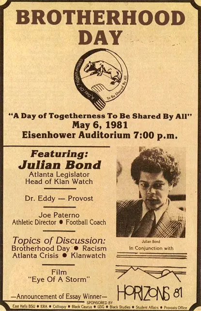
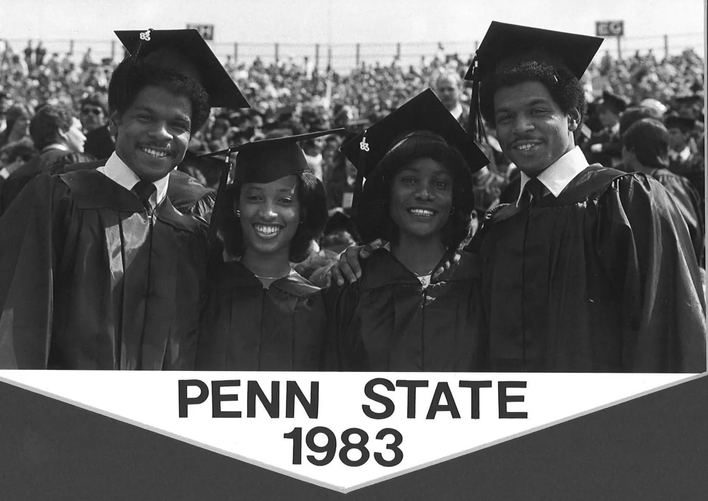
Brotherhood Day began on May 6, 1981, chaired by Darnell, “to enhance awareness of the positive results of unity and the negative effects of racism and separatism.” Over three years it brought Julian Bond, Benjamin Hooks, and Martin Luther King III to campus. Both twins joined Delta Nu Alpha, the logistics fraternity. Darryl graduated in May 1983. In 1987 the department gave him an outstanding service award. He later became a Life Member of the Penn State Alumni Association and a member of its Golden Lion Society. 6
From Dow Chemical to Constellation
By the spring of 1985 he was a distribution analyst at Dow Chemical in Midland, Michigan. His LinkedIn profile also lists IBM, PricewaterhouseCoopers, Dade Behring, and DuPont (self-reported · LinkedIn). The 2019 Chicago awards program confirms the Dade Behring years: while there, and later at American Water, he “created the business case, formalized and managed supplier diversity programs for two organizations.” The program prints the company as “Dade Bearing.” 26
On the morning of September 11, 2001, Darryl was in Arlington, Virginia, for a business meeting, not far from the Pentagon. That same morning Darnell was in a building next to the World Trade Center. 19
From 2003 to 2014 he worked at American Water in supply-chain roles his LinkedIn profile describes as senior supplier relationship and project sourcing manager and interim chief supply officer (self-reported dates and titles). The Delaware County Daily Times confirmed in 2014 that he worked there, when Benjamin and Warren gave a health presentation to employees. In 2015 he joined Exelon in Philadelphia as a principal category manager. At the 52nd Chicago Business Opportunity Fair, April 17–18, 2019, the Chicago Minority Supplier Development Council named him an Outstanding Buyer of the Year. 26
Since 2022 he has worked for Constellation. His LinkedIn profile gives the title principal sourcing manager (self-reported). Constellation’s own supplier contact list, dated August 2026, names him Principal Category Manager. Email addresses on that list are not reprinted here. 51
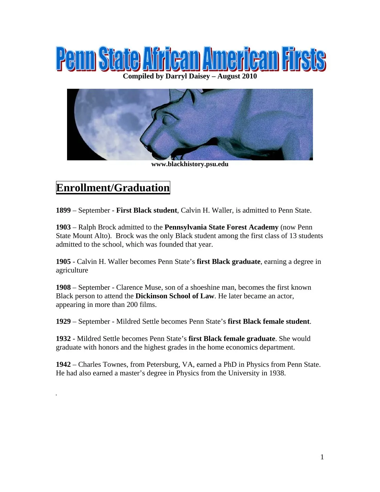
In November 2007, after registering for the Black Alumni Reunion, he “was somewhat surprised to discover there was no documented comprehensive account of the African American experience at Penn State.” Penn State kept no records by race before 1970, so he worked from a distance, through alumni, old newspapers, and yearbooks. On April 18, 2008, the roughly fifty-page Chronicles, 1899–2008, was given to everyone at the reunion. Many considered it the first comprehensive account. In the acknowledgments he thanked Sari, who proofread it, and “two young sons, Benjamin and Warren, for putting up with the late nights.” 22
He wanted students to have it too. An informal site became PennStateBlackHistory.com, and on September 10, 2010, the official site, blackhistory.psu.edu, launched. WPSU built it. The copyright line reads “© Darryl B. Daisey and WPSU Penn State.” Penn State Libraries holds three editions, through 2016. 24
“History tells you why you’re here. It makes me feel blessed and appreciative of what people did before me, but also motivates me to want to continue to move things forward.”
He has kept teaching it. On February 23, 2011, he spoke at the All-Sports Museum beside ESPN’s Lisa Salters, and said he wanted to talk about “lost legends” beyond sports. On February 23, 2017, the campus NAACP hosted him for “Penn State African American History… Shaping a Stronger Community Today.” He spoke about Mildred Settle Bunton, Cumberland Posey, the Douglass Association, and Lincoln Hall, and he did not skip what he calls “the good, the bad, and the ugly.” That month the chapter gave him its Carter G. Woodson Award (self-reported · LinkedIn). On April 2, 2025, he returned for “A History of Black Excellence at Penn State.” The Collegian headlined his line: “Penn State would not be Penn State without its people of color.” 48
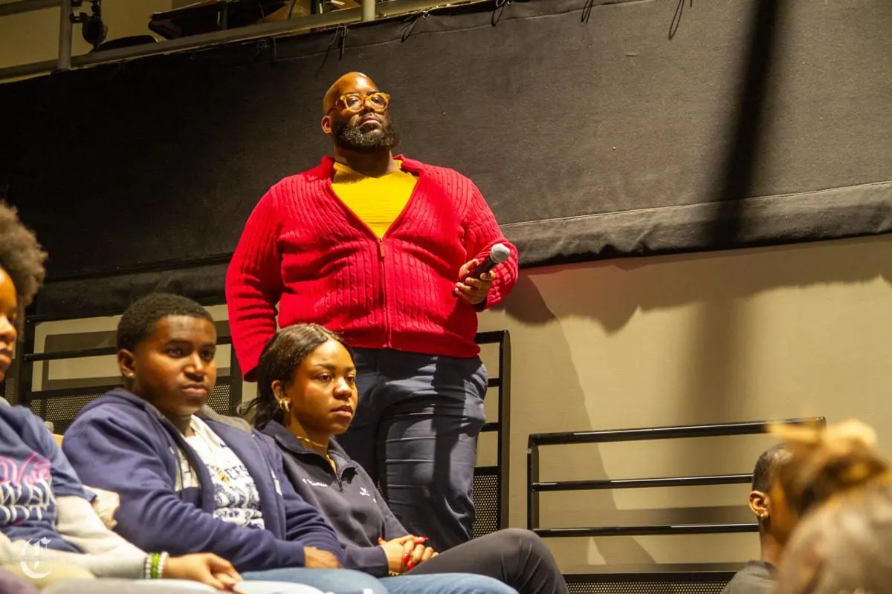
Some honors are in a public record. Others appear only on his LinkedIn profile and stay marked that way.
| When | Honor | Basis |
|---|---|---|
| 1987 | Outstanding service award, Department of Business Logistics | Penn State Black History profile 6 |
| 2010 | Enduring Contribution Award, for the Chronicles and blackhistory.psu.edu | Self-reported · LinkedIn 20 |
| 2014 | Legends Achievement Award, African American Alumni Organization | Self-reported · LinkedIn |
| 2015 | Frances Harper Distinguished Alumni Award, African American Studies | Self-reported · LinkedIn |
| 2017 | Carter G. Woodson Award, Penn State NAACP | Self-reported · LinkedIn |
| 2019 | Outstanding Buyer of the Year, Chicago MSDC | Awards program 26 |
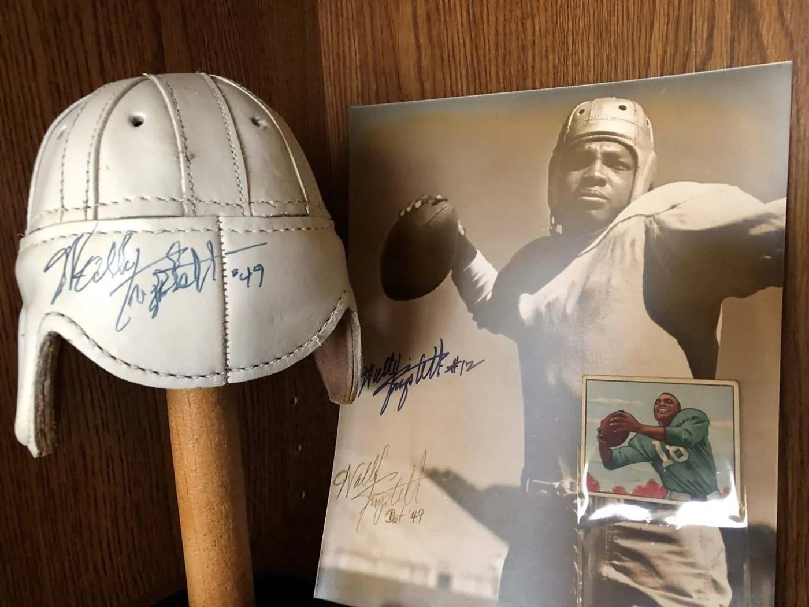
Return to Lewes
William Daisey Sr. died on Thanksgiving Day, November 25, 2021. The next April, the gold can became the Daisey Family Legacy Photo Collection. By February 2023 the family had posted more than 350 pictures on the Memories of Lewes page, and neighbors helped name the people. Trina Brown-Hicks said, “I thought that history was lost there.” On February 16, 2023, Darryl presented the family history to the heritage commission. The Lewes Historical Society borrowed seventy photographs. “We hope it will not only help, but enrich the telling of the African American story of Lewes,” he said. 3
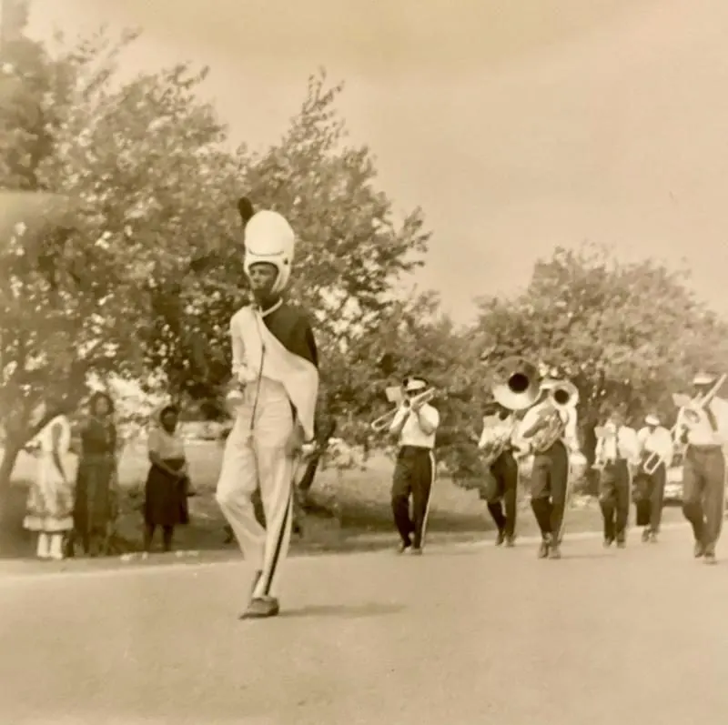
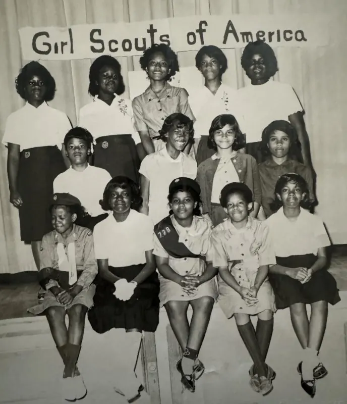
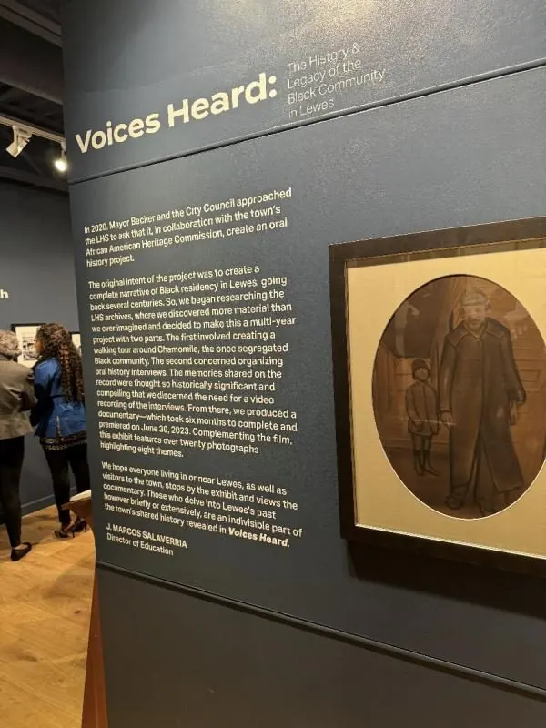
The photographs fed the documentary and the exhibit Voices Heard. It opened at the Lewes History Museum on April 19, 2024. Darryl said more than 100 people came. Delaware Today counted 150, including members of Langston Hughes’s family, and the society called the attendance a record. “It is a positive portrayal of our history,” he said. 29
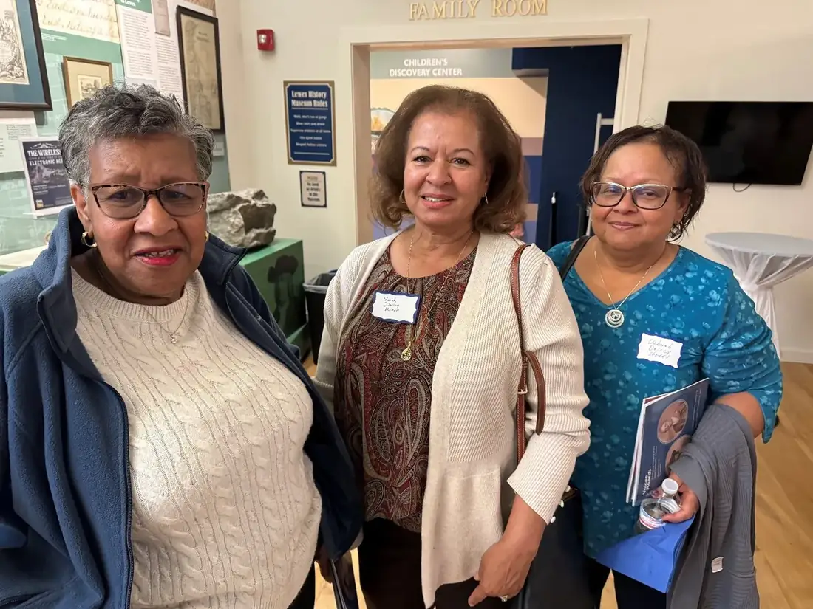
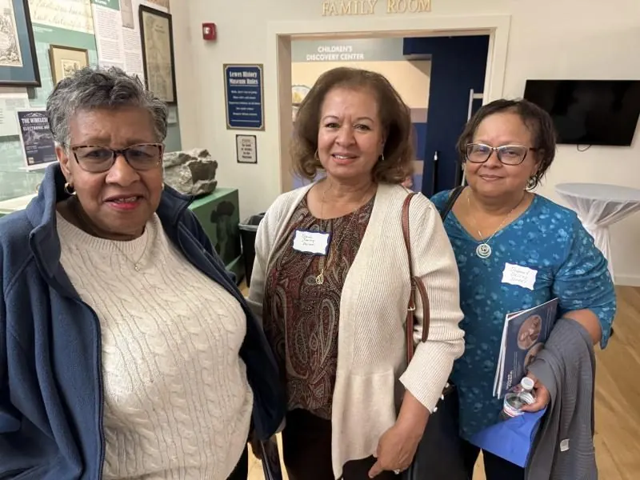
The Mayor and Council created the Lewes African American Heritage Commission on January 13, 2020. The city now lists Darryl as chairperson, with a term to February 1, 2027. He compiled the Lewes Delaware Black History Timeline, ten pages from 1631 to the present, last updated in June 2026. 8
On February 22, 2025, he moderated a panel of five of the nine Allen and Daisey children who desegregated the schools, including his sisters Sarah and Deborah, and laid out the timeline from Delaware’s 1875 Jim Crow law to Brown v. Board. On February 21, 2026, he emceed “This Used to Be My Playground,” about the field where children played from 1957 until the land was sold in 1978, now Shipcarpenter Square. In August 2026 he told Delaware Public Media, as chair, that plans for a Johnnie Walker Beach pavilion were stuck with the city’s engineering firm. On October 14, 2026, he organized “Bridging the Promise: Girl Scouts Then & Now” at Bethel United Methodist Church, where both the Black and white troops had once met. 37
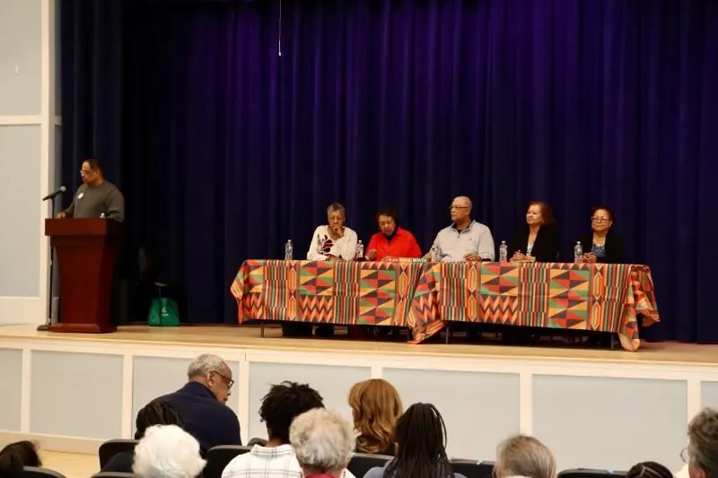
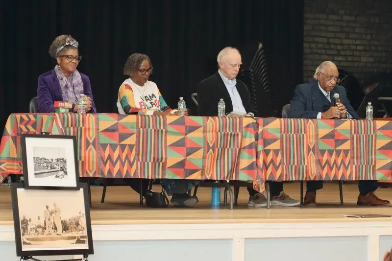
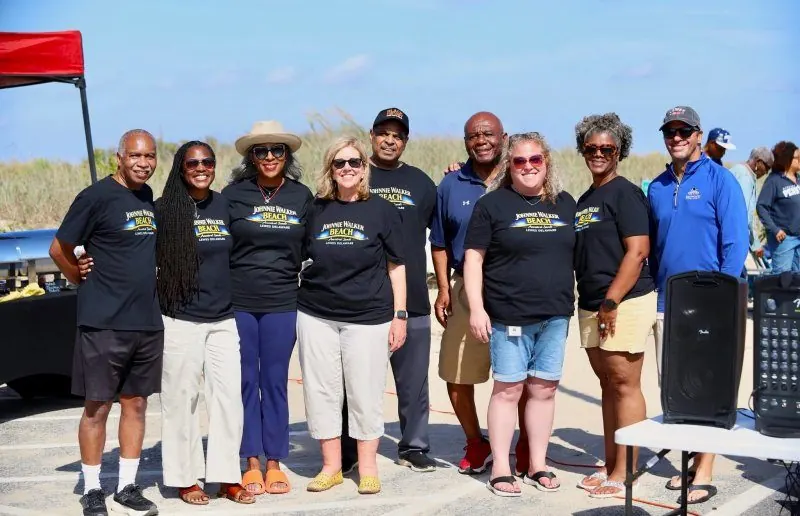
Their father wanted the three Lewes properties kept, so the next generation would stay connected. The fight over the largest lot was long. The old house came down in March 2024. On May 7, 2025, the family opened a new four-bedroom house designed by James Burgess. “We weren’t looking to build a mansion,” Darryl said. “We wanted to build someplace that could be lasting.” A second house, the one William S. Daisey bought after the war, was condemned for termites and demolished in August 2025. On November 6 the review board approved a new house, 5–0. “We’re happy that future generations will keep using that house and stay engaged in the City of Lewes,” Darryl said. The 1880 homestead is next. 4
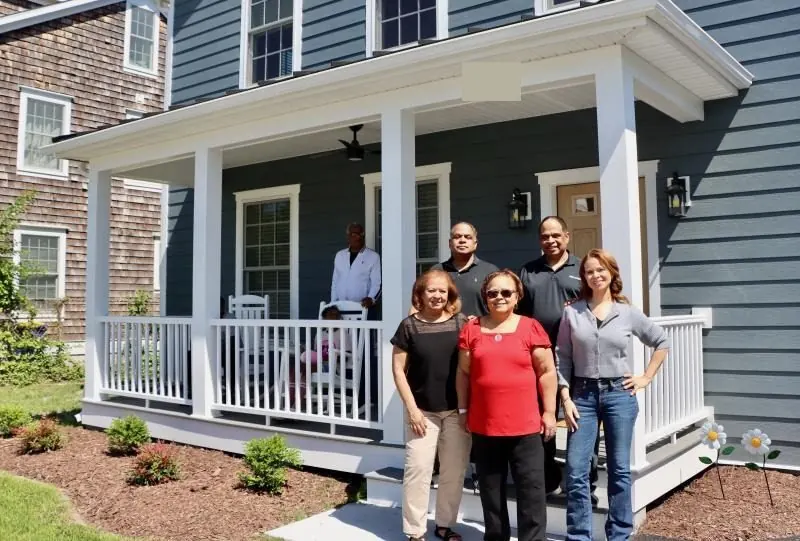
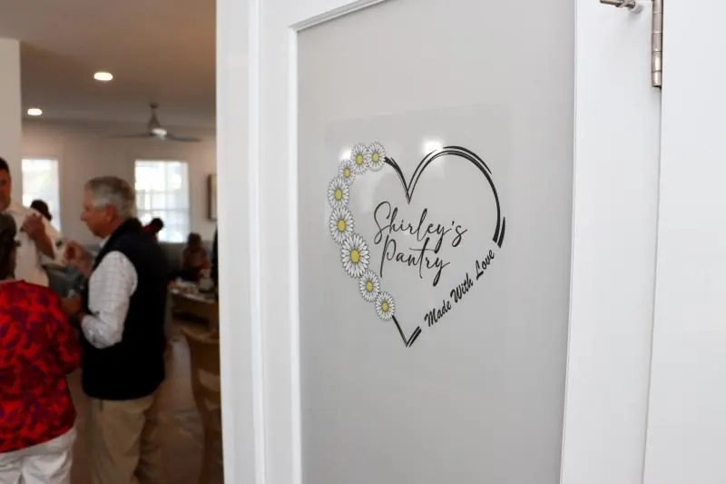
Darnell chaired the first Brotherhood Day, graduated in logistics the same year, and on September 11, 2001, walked fifty-five blocks uptown after a building next to the World Trade Center shook. He later wrote a memoir he titled “Too Close to Realize.” In Lewes he became the family’s main spokesman on the houses. 19
Sari (Rosemond) Daisey proofread the first Chronicles. She and Darryl raised Benjamin and Warren in Garnet Valley, Pennsylvania. Darryl named Benjamin for Benjamin Harrison Daisey, the relative in the family photographs. The Cape Gazette called that relative a “great, great uncle” in the story and a “great-uncle” in a caption, so the sources do not agree on the exact degree. Benjamin studied music technology at Temple University and is listed in the Spring 2024 capstone program. Warren, the younger son, is a student at Commonwealth University–Bloomsburg. His competition results come from his own public posts and are marked self-reported. In 2014, when Warren was eight, the Delaware County Daily Times covered the brothers presenting a soda study at American Water. Darryl and Sari said the day would help them “not only speak in public, but also in selling their ideas.” 21
December 6, 2025
On December 6, 2025, the family’s new Lewes house was one of ten homes on the Holiday House Tour. The Cape Gazette shows Darryl in the living room, beside a tree hung with Santa ornaments, telling visitors the story of the family. Framed photographs stood on easels. “An extensive collection of African American Santas” was set among them. 32
The next night he posted an album in a public Facebook group, “African American Christmas Decorators & MORE....” The post reads, in full: “Family participated in the annual Holiday House Tour in Lewes, Delaware yesterday and our theme was Black Santa. About 100 of our Black Santa figures/images and 100 Black Santa ornaments were displayed, with the tree being a big hit.” 33
What the public record does not say is when the collection began, which pieces are oldest, or who started it. The only public figures are the family’s own: about 100 figures and images, and 100 ornaments. The Cape Gazette story and that post are the only public accounts the biography found.
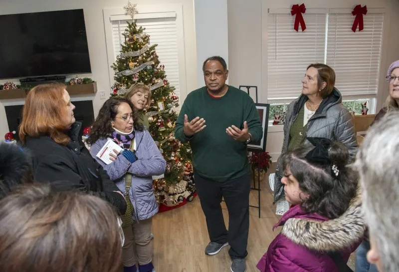
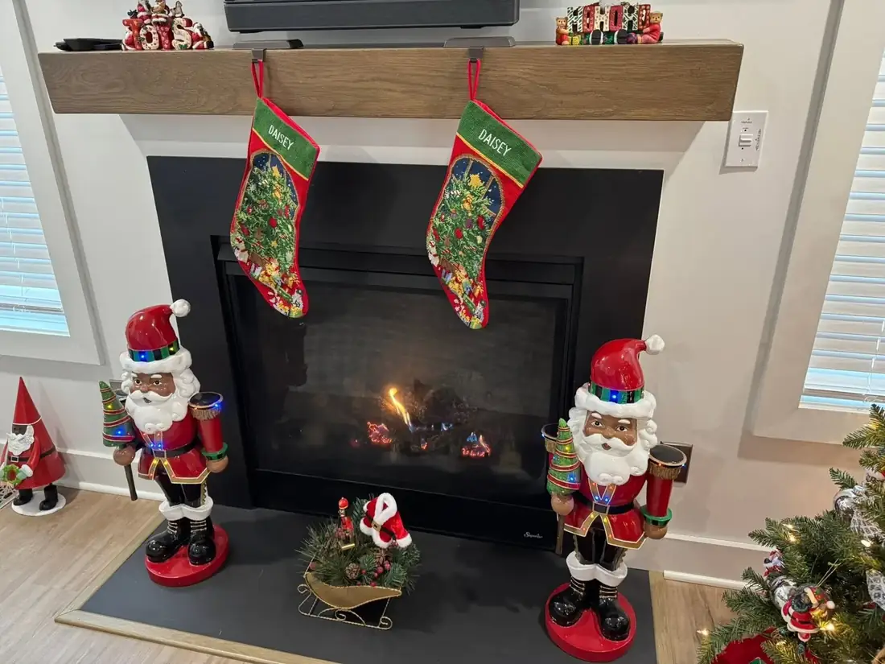
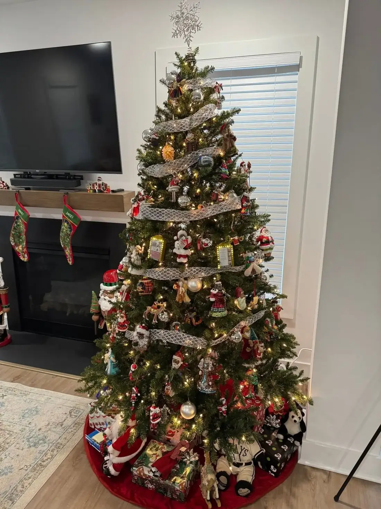
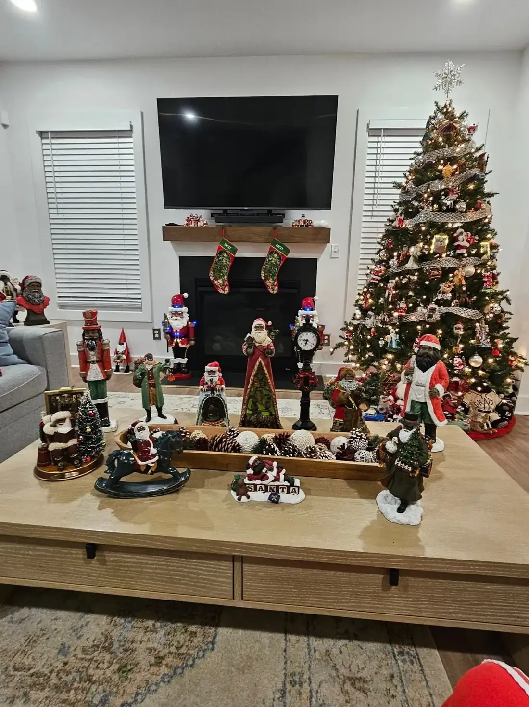
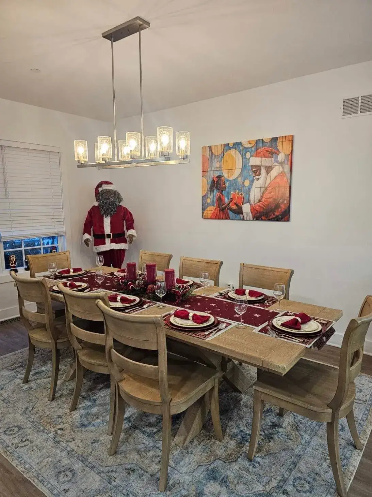
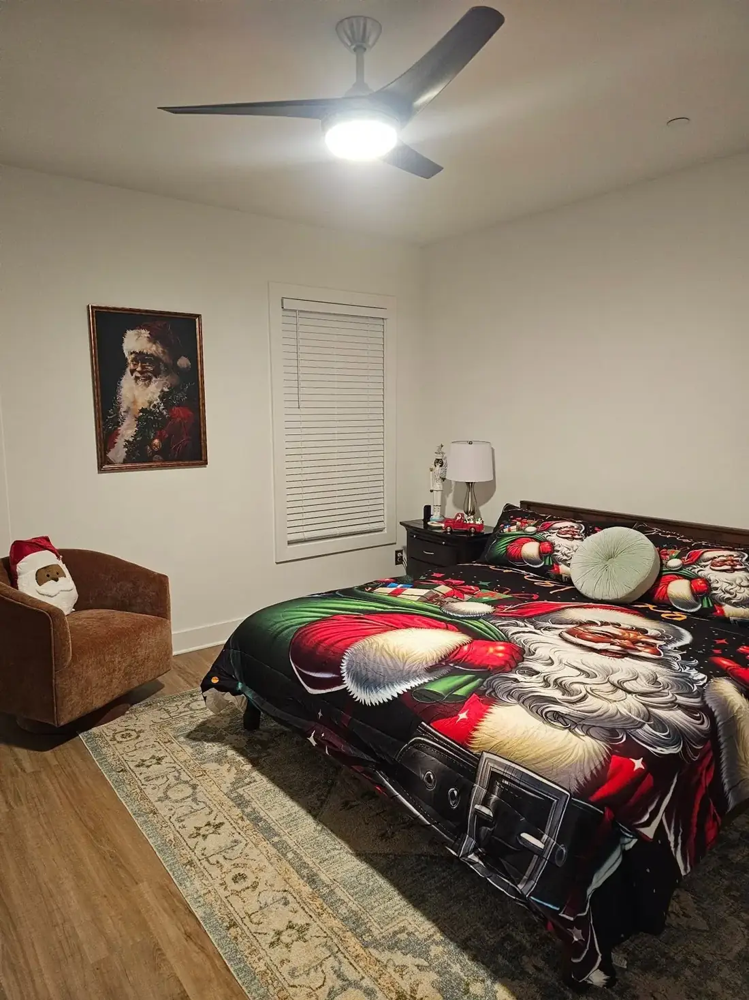
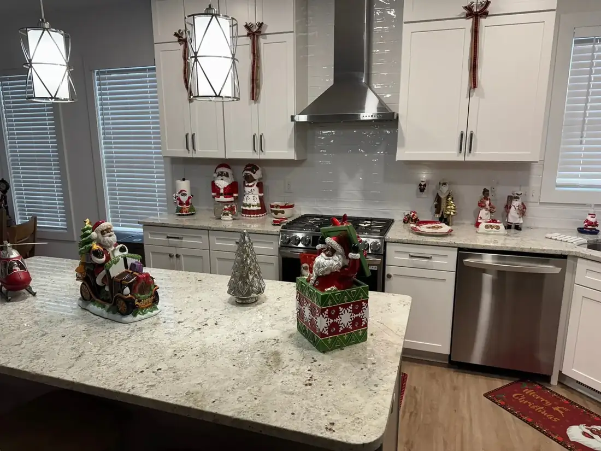
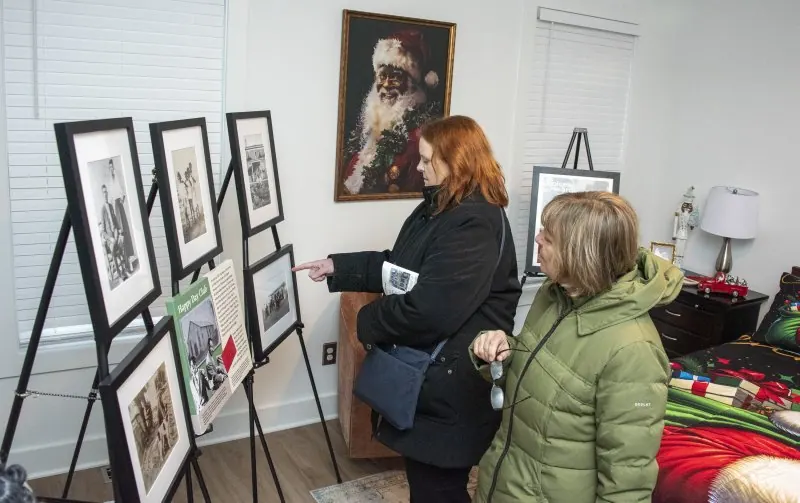
In his own words
In its September/October 2024 issue, The Penn Stater gave its editor’s column to Darryl under the headline “A History Worth Documenting.” The summary reads: “Darryl Daisey’s passion and dedication illuminate the stories of Black Penn Staters.” 1
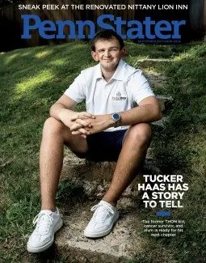
“Penn State would not be Penn State without its people of color.”
The public record follows one thread. A Lewes family had to send a son ninety miles away to finish high school, and that son became a city councilman and a tribal chief. His wife led a Black Girl Scout troop when the town’s troop would not admit Black girls, and their oldest children helped integrate the schools. One of their children, a logistics graduate who spent his career in supply chains, became the person Penn State and Lewes turn to when they want to know their Black history. He compiled it, published it, gave it away, lent the family photographs to a museum, and in 2026 chaired the city commission charged with preserving it. 1
All 87 sources, numbered the way the biography cites them.
On this page only
This guide runs in your browser. It searches the biography and answers with a passage, the chapter, and the source numbers. If the biography does not cover a question, it will say so. It does not invent facts, and it will not give out an email, a phone number, or a street address.